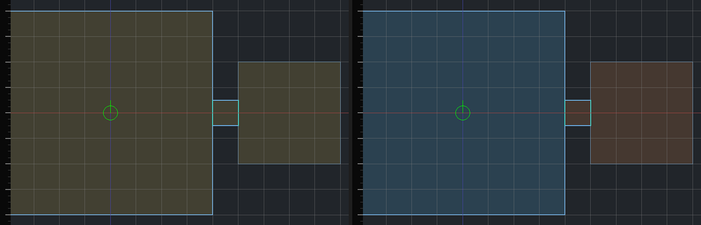

Outdoors and weather
Each zone is Interior, Exterior or Semi-exterior. The type decides how weather is heard there.
| Zone type | Weather is heard | Set by |
|---|---|---|
| Exterior | everywhere, at full level | Auto, when the room is open to the sky itself |
| Interior | coming in through the way out | Auto, for every other room |
| Semi-exterior | between the two, by Weather exposure | you: an awning, an archway, a covered market |
Set the type in the air brush's Audio section: see Rooms.
Open to the sky is not the same as lit by it
A room is open to the sky when its own walls include sky faces. A room with a window onto a courtyard is not: the rain is at the window, not overhead.
Lighting asks a different question. For the lightmapper, a room that can see the sky through any chain of openings is exterior, so daylight comes in through the window. See Lighting.
So a room with a window is lit as exterior and heard as interior. That is intended. Compare the two answers on the 2D floorplan:
- Open the Cells dropdown in a 2D view.
- Choose Interior / exterior to see how lighting classifies each room.
- Choose Acoustics to see how sound classifies it.
| Acoustics overlay colour | Meaning |
|---|---|
| orange | Interior |
| blue | Exterior |
| green | Semi-exterior |
| grey | excluded from the graph |

Covered spaces
Auto cannot tell a covered space from a closed one. Mark it yourself.
- Select the air brush of the archway or awning.
- In Audio, set Zone type to Semi-exterior.
- Set Weather exposure: 0 is fully sheltered, 1 fully open. Try 0.5 for an open-sided shelter.
- Rebuild the audio graph.
Weather
Rain and wind are env_sound_environment entities. Place one anywhere in the map; where it stands does not matter.
| Property | What it does | Default |
|---|---|---|
sound_file |
Path of the sound, relative to your game's sounds folder. | empty |
volume |
Level in dB, as heard outdoors. | 0 |
autoplay |
Starts when the map loads or the simulation starts. | on |
loop |
Loops the sound. | on |
direction |
Zero: heard from the way out, as below. Otherwise the direction the sound travels, and it always comes from that side: (0, -1, 0) is thunder overhead. |
(0, 0, 0) |
How it sounds from where the listener stands:
- Outdoors: all round, at full level.
- Indoors: from the room's ways out, each opening at its own place and its own level, up to four of them. The nearest is loudest; a room with windows on two sides hears the rain on both sides. It gets quieter and duller the further in the listener is, and a shut door on the way counts against it.
- Semi-exterior: between the two, by the room's weather exposure.
- A sealed room with no way out hears almost nothing.
Walking in from the street is a fade, never a step.
Note: Weather needs a built audio graph. Without one it plays 40 dB down everywhere. See The audio graph.